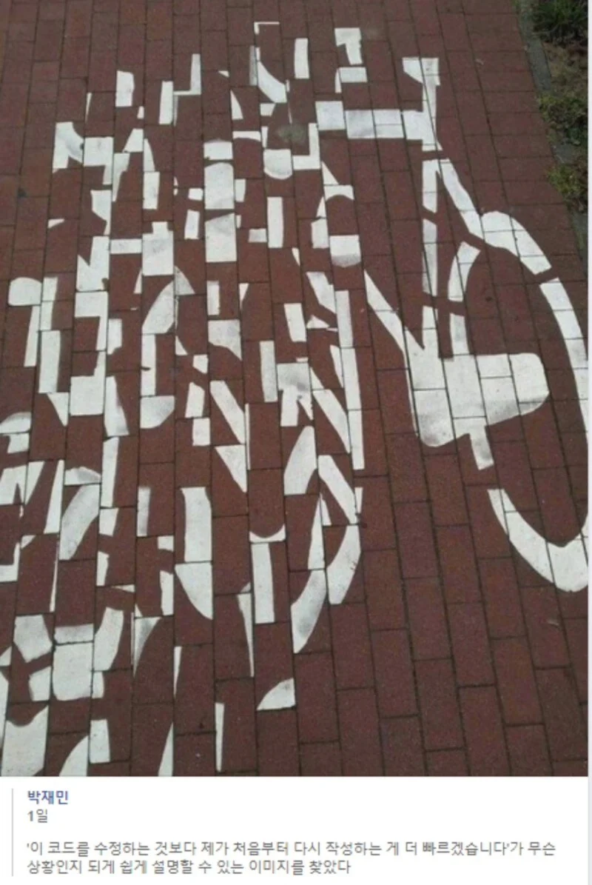

이걸 복구하라고요? 제가요?
댓글
재밌겠는데? 퍼즐도 하고 일당도 받고.
일당3만원
늦어질수록 실질적인 수당이 줄어듬
축하한다... 그쪽세계의 자전거....
이제는 LLM 덕분에 정말로 다시 짜는 것이 압도적으로 빠르겠다

클로드야 복구해줘
저는 언어기반입니다 GPT한테 말하세요
AI 에 사진 찍어 올린다음에 맞춰달라면 금방하더라..
ILP 보수 작업을 해봐서..
저게 얼마나 개 좆같은지 짐작한다.
그냥 새로 깔고 그리는 게 낫다.
중간에 블럭빼서 손상없이, 단차없이 꽂는게 존나힘들어.
ㄹㅇㅋㅋㅋ 다시 나라시잡고 할생각하면 소름돋음
은행 어플이 계속 새로 생겨나는 이유가 이거구나
"나 라면 할 수 있다"
문제는 새로 짜도 얼마 뒤면 다시 저렇게 된다는 거임.
복구하려는 시늉도 안했잖아요
버블정렬 진행중
근데 해보고싶다 재밌을듯